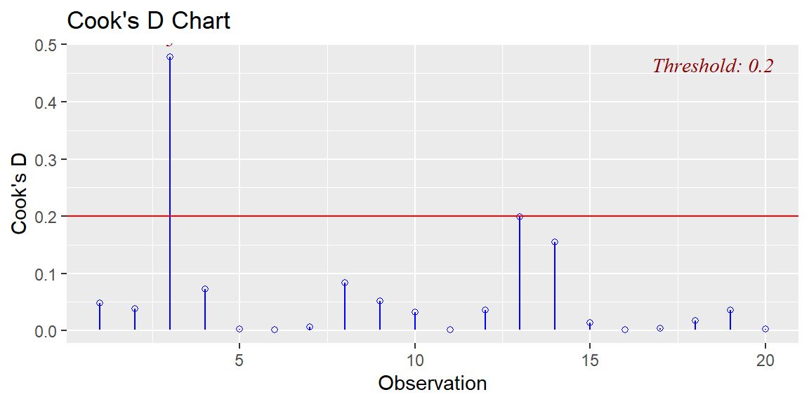
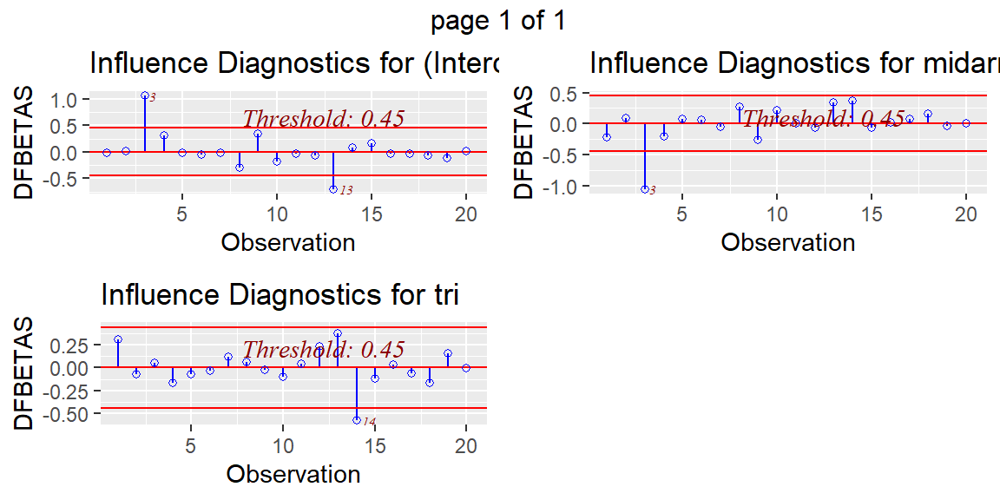
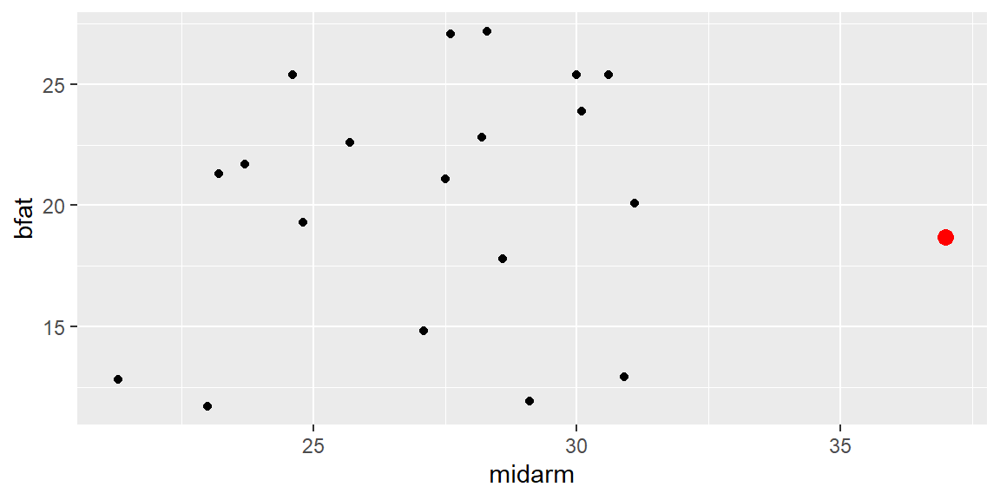
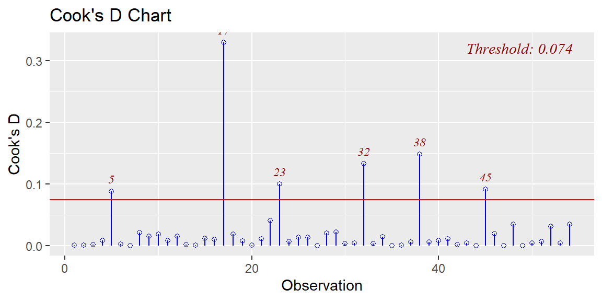
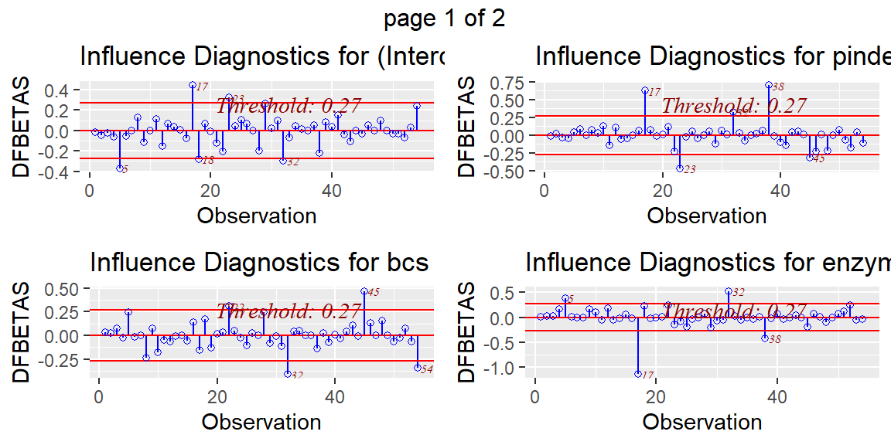
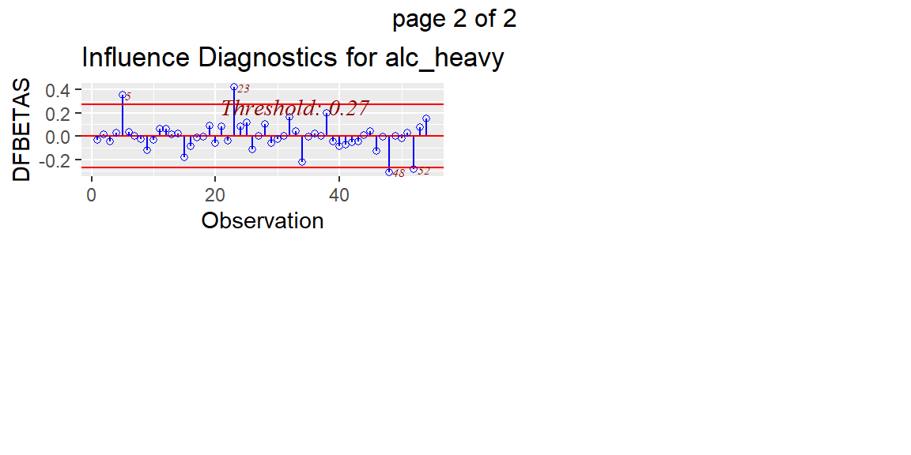

“Be approximately right rather than exactly wrong.” - John Tukey
20.1 Outliers with Respect to the Response Variable
In Chapter 8 we discussed outliers in the simple regression case.
Recall that a point can be outlying with respect to \(y\) or with respect to \(x\) but have little effect on the fitted line.
If an observation is outlying with respect to \(y\) but has an \(x\) value close to \(\bar{x}\), then it will have little effect on \(\hat{y}\). If it is far from \(\bar{x}\), it will have a large effect.
If an observation is an outlier with respect to \(x\) but still follows the linear relationship between \(x\) and \(y\), then it will also have little effect on \(\hat{y}\).
In multiple regression, we will still need to view the outliers with respect to \(y\) and with respect to the predictor variables \(x_1\ldots,x_{p-1}\). We will identify these outlying observations by how they affect the fitted model \(\hat{y}\).
20.2 Studentized Residuals
Recall from Chapter 7 that semistudentized residuals \[
\begin{align*}
e_{i}^{*} & =\frac{e_{i}}{\sqrt{MSE}}
\end{align*}
\] can be used to determine if an observation is an outlier.
We called them semistudentized because \(\sqrt{MSE}\) is not an estimate of the true standard error of \(e_i\). Therefore dividing by \(\sqrt{MSE}\) does not give a true student t-score.
With the hat matrix \[
\begin{align*}
{\bf H} & ={\bf X}\left({\bf X}^{\prime}{\bf X}\right)^{-1}{\bf X}^{\prime}
\end{align*}
\] we can now present the true variance of \(e_i\): \[
\begin{align}
Var\left[e_{i}\right] & ={\sigma^{2}\left(1-h_{ii}\right)}
\end{align}
\tag{20.1}\] where \(h_{ii}\) is the \(i\)th diagonal element of \(\bf{H}\).
We can estimate \(Var\left[e_{i}\right]\) with \[
\begin{align}
s^2\left[e_{i}\right] & =MSE\left(1-h_{ii}\right)
\end{align}
\tag{20.2}\]
Dividing \(e_i\) by \(s\left[e_{i}\right]\) gives us a true t-score. Thus the *{studentized} residual is \[
\begin{align}
r_{i} & =\frac{e_{i}}{\sqrt{MSE\left(1-h_{ii}\right)}}
\end{align}
\tag{20.3}\]
A rule of thumb is any \(r_i\) greater than 3 in absolute value should be considered an outlier with respect to \(y\).
20.3 Deleted Residuals
As we stated above, it is possible for an observation to be outlying with respect to \(y\) but not have an effect on the fitted value.
Also, if \(y\) does effect the fit greatly, then the fitted value \(\hat{y}\) will be “pulled” towards \(y\) and thus make \(r_i\) not so large.
One way to see how an (potentially outlying) observation \(y_i\) influences the fit is by first fitting the model without \(y_i\) and then try to predict \(y_i\) based on that fitted model.
The difference from the observed \(y_i\) and the predicted value based on the model fitted with the remaining \(n-1\) observations \(\hat{y}_{i(i)}\) is called the deletedresidual: \[
\begin{align}
d_{i} & =y_{i}-\hat{y}_{i\left(i\right)}
\end{align}
\tag{20.4}\]
At first glance, it would appear that obtaining \(d_i\) for all observations would be computationally expensive since it would require a different fitted model for each \(i=1,\ldots,n\). However, it can be shown that the deleted residuals can be expressed as \[
\begin{align}
d_{i} & =\frac{e_{i}}{1-h_{ii}}
\end{align}
\tag{20.5}\] which would not require a new fit for each \(i\).
20.4 Studentized Deleted Residuals
The estimated variance of the deleted residual \(d_{i}\) is \[
\begin{align}
s^{2}\left[d_{i}\right] & =\frac{MSE_{(i)}}{1-h_{ii}}
\end{align}
\tag{20.6}\] where \(MSE_{(i)}\) is the \(MSE\) of the fit with \(y_{i}\) removed.
We can obtain a studentized deleted residual with \[
\begin{align}
t_{i} & =\frac{d_{i}}{s\left[d_{i}\right]}\nonumber\\
& =\frac{e_{i}}{\sqrt{MSE_{(i)}\left(1-h_{ii}\right)}}
\end{align}
\tag{20.7}\]
Again, we do not need to calculate a new regression fit for each \(i\) due to the relationship \[
\begin{align}
MSE_{(i)} & =\left(\frac{n-p}{n-p-1}\right)MSE-\frac{e_{i}^{2}}{\left(n-p-1\right)\left(1-h_{ii}\right)}
\end{align}
\tag{20.8}\]
Since \(t_{i}\) follows a Student’s \(t\) distribution with \(n-p-1\) degrees of freedom, then any \(t_{i}\) greater than \(t_{\alpha/2n}\) will be considered a potential outlier.
Note that the \(\alpha/2n\) is called a Bonferroni adjustment in that it divides the significance level \(\alpha\) by \(2n\). This is done to control for an overall significance level of \(\alpha\) when examining the \(n\) studentized deleted residuals.
20.5 Outliers with Respect to the Predictor Variables
We can identify outliers with respect to the predictor variables with the help of the hat matrix \({\bf H}\).
We have already seen that it plays an important role in the studentized deleted residuals.
We will now use the diagonal elements of \({\bf H}\), \(h_{ii}\), as a measure of how far the \(x\) values of an observation are from the center \(x\) value of all the observations.
20.5.1 Leverage Values
We first note some properties or \(h_{ii}\): \[
\begin{align}
& 0\le h_{ii}\le1 &\\
& \sum h_{ii}=p &
\end{align}
\tag{20.9}\]
The larger the value of \(h_{ii}\), the further the \(i\)th observation is from the center of all the \(x\)’s. Thus, we call \(h_{ii}\) the leverage. If an observation has a large leverage value, then it has a substantial “leverage’’ in determining \(\hat{y}_{i}\).
Leverage values greater than \(2p/n\) are considered large when \(n\) is reasonably large.
20.5.2 Using Leverage to Identify Hidden Extrapolation
In simple regression, we stated that we did not want to extrapolate outside the range of the \(x\) variable.
In multiple regression, we still do not want to extrapolate but now we cannot just think in terms of the range of each individual predictor variable. We must now think in terms of extrapolating for values combinations of the \(x\) variables that we may not have seen information for in our data.
For example in the bodyfat data, tri had a range of about 14 to 32. The variable thigh had a range of values from about 42 to about 58.5. However, we did not have any observations with a tri of, say, 16 and a thigh of, say, 55. Those with small tri values also tended to have small thigh values. So this would be hidden extrapolation.
We can use the hat matrix to identify hidden extrapolation. This is done by using the vector of \(x\) values you want to predict at, \({\bf X}_{new}\), and then including it in the hat matrix as \[
\begin{align}
h_{new,new} & ={\bf X}_{new}^{\prime}\left({\bf X}^{\prime}{\bf X}\right)^{-1}{\bf X}_{new}
\end{align}
\tag{20.10}\]
If the value of \(h_{new,new}\) is much larger than the leverage values in the data set, then it indicates extrapolation.
20.6 Influential Cases
Once we have identified observations that are outlying with respect to \(y\) or with respect to predictor variables, or both, we now want to know just how much it affects the fitted regression model.
If an observation causes major changes in the fitted model when excluded, then we say the observation is influential.
Not all outliers are influential. We will determine which are influential by seeing what happens to the fitted values when that observation is deleted as we did with the deleted residuals above.
20.6.1 Influence on a Single Fitted Value
We can see how much influence an observation has on a single fitted value \(\hat{y}_{i}\) by examining \[
\begin{align}
DFFITS_{i} & =\frac{\hat{y}_{i}-\hat{y}_{i\left(i\right)}}{\sqrt{MSE_{(i)}h_{ii}}}
\end{align}
\tag{20.11}\]
As before, a new regression fit is not needed to obtain \(DFFITS_{i}\). It can be shown that Equation 20.11 can be expressed as \[
\begin{align}
DFFITS_{i} & =t_{i}\left(\frac{h_{ii}}{1-h_{ii}}\right)^{1/2}
\end{align}
\tag{20.12}\] which does not require a new regression fit excluding the \(i\)th observation.
A general guideline is that a value of DFFITS greater than 1 for small to medium datasets and greater than \(2\sqrt{p/n}\) for large datasets indicates an influential observation.
20.6.2 Influence on All Fitted Values
We can consider the influence of the \(i\)th observation on all the fitted values \(\hat{y}_{i}\) with a measure known as Cook’s distance.
It is defined as \[
\begin{align}
D_{i} & =\frac{\sum_{j=1}^{n}\left(\hat{y}_{j}-\hat{y}_{j\left(i\right)}\right)^{2}}{pMSE}\\
& =\frac{e_{i}^{2}}{pMSE}\left(\frac{h_{ii}}{\left(1-h_{ii}\right)^{2}}\right)
\end{align}
\tag{20.13}\]
Note the last expression in Equation 20.13 does not require a new fitted regression model for each \(i\).
From Equation 20.13, we see that \(D_{i}\) depends on \(e_{i}\) and \(h_{ii}\). If either one is large, then \(D_{i}\) will be large.
So an influential observation can have a
large residual \(e_{i}\) and a moderate leverage \(h_{ii}\),
a large leverage \(h_{ii}\) and a moderate residual \(e_{i}\),
or both a large residual and large leverage.
20.6.3 Influence on the Coefficients
We can also see the influence of an observation on the individual coefficients \(\hat{\beta}_{k}\), \(k=0,1,\ldots,p-1\). Again, we do this by seeing how much \(\hat{\beta}_{k}\) changes when that observation is removed.
A measure of this change is \[
\begin{align*}
DFBETAS_{k\left(i\right)} & =\frac{\hat{\beta}_{k}-\hat{\beta}_{k\left(i\right)}}{\sqrt{MSE_{(i)}c_{kk}}}
\end{align*}
\] where \(c_{kk}\) is the \(k\)th diagonal element of \(\left({\bf X}^{\prime}{\bf X}\right)^{-1}\).
The sign of \(DFBETAS\) indicates whether \(\hat{\beta}_{k}\) increases or decreases when the \(i\)th observation is removed from the data. A large magnitude of \(DFBETAS\) indicates the \(i\)th observation is influential on the \(k\)th coefficient.
A rule of thumb is a \(DFBETAS\) value greater than 1 in absolute value for small to medium datasets and greater than \(2/\sqrt{n}\) for large datasets indicates an influential observation.
Example 20.1 (Bodyfat data) Let’s examine the bodyfat data and determine if there is any observations that we should be concerned about.
We have already seen that there is an issue of multicollinearity in this data. The lasso fit in Example 19.4 showed that tri and midarm would have an important impact on bfat.
We can plot the studenitzed residuals versus the leverage values using the olsrr library.
We see from this plot that there are no outliers with respect to \(y\) but there are two values that are potential outliers with respect to the predictor variables.
To determine if either of these points are also influential, we can use the
fit |>extract_fit_engine() |>ols_plot_cooksd_chart()

We see that observation 3 (which was also high leverage) is influential to the fit. We can see which of the coefficients it has the largest influence on with DFBETAs.
fit |>extract_fit_engine() |>ols_plot_dfbetas()

Since observation 3 has a large value of DFBETA for midarm, then we say that it is influential for this variable. Since the DFBETA is negative, then when we don’t have observation 3, then the estimated coefficient become larger than when we do have observation 3. To further investigate this observation, let’s do a scatterplot of bfat and midarm and highlight observation 3.
dat |>ggplot(aes(x=midarm, y = bfat))+geom_point()+geom_point(data= dat[3,], aes(x=midarm, y = bfat), color="red", size =3)

We see that this observation has an “average” bfat value but the midarm value is larger than any other observation. Further investigation would be needed to determine if this is an observation that should be deleted. For example, suppose this is a subject who also lifted weights. Is this the type of subject we want to include in this population of interest? If not, then the observation can be removed.
Example 20.2 (Hidden Extrapolation) Suppose we want to predict bfat for a woman in this population with tri = 19.5 and midarm = 29.
Was our model fit with combinations of these two predictors close to the values we want to predict? If so, then the the hat value for this new observation, determined by Equation 20.10 should be close to the hat values of the observations that were used to fit the model. If the hat value for the new observation is much larger than the other observation hat values, then this new value is extrapolation.
The applicable library allows us to compare the hat value of a new observation to that of the observations used to fit the data
The hat value for this observation is in the 88.6th percentile of the hat values of the observations used to fit the model. Thus, this is not hidden extrapolation.
Let’s now try an observation with tri=14 and midarm=30.
This new observation has a hat value higher than any hat value of the observations used to fit the model. This indicates that this combination of the predictor variable values was not used to fit the model. Thus, this is hidden extrapolation.
Example 20.3 (Surgical Unit data) Let’s examine the surgical unit data first seen in Example 18.1. Recall that the predictors bcs, pindex, enzyme_test, and alc_heavy were selected for a model determined by best subsets regression. We will now check for outliers and influential observations for this model.
There is one clear outlier with respect to the response variable (observation 17). Examining the leverage values, we see there are five observations beyond the guideline. In a situation line this, we look for leverage values that are clearly separated from the others. There are two such values (observations 28 and 38). We will now examine these three in terms of influence.
fit |>extract_fit_engine() |>ols_plot_cooksd_chart()

Observations 17 and 38 are influential while observation 28 is not. So these two observations should be investigated further to determine if they should be removed. Let’s look at DFBETAs to get a better idea which coefficients are influenced by these observations.
fit |>extract_fit_engine() |>ols_plot_dfbetas()


Observation 17 is influential on the coefficients of pindex and enzyme_test. Observation 38 is influential on the coefficient of pindex and slightly influential for enzyme_test.